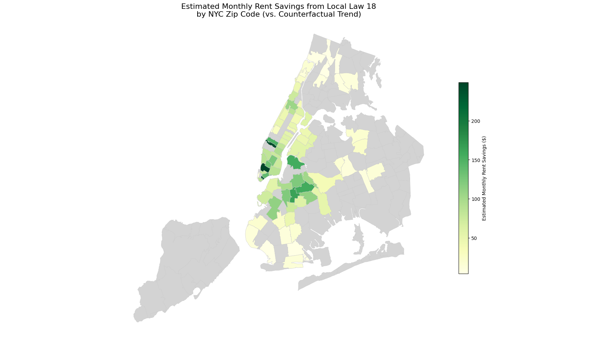
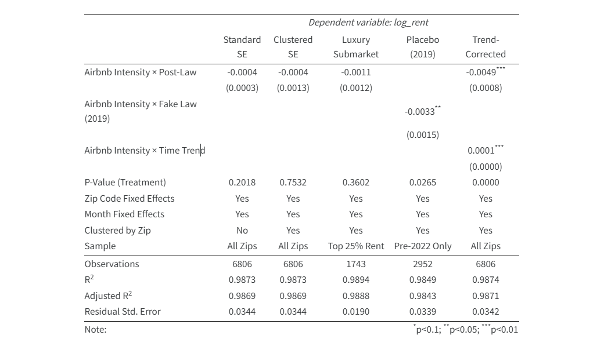

~0.5% rent growth reduction per listing · Up to $300/mo saved · 82 ZIP codes · 2019–2025
Difference-in-differences analysis of NYC’s 2023 Airbnb ban, correcting for a parallel trends violation from differential gentrification rates. The law acted as a rent stabilizer — most pronounced in high-density neighborhoods like Williamsburg.